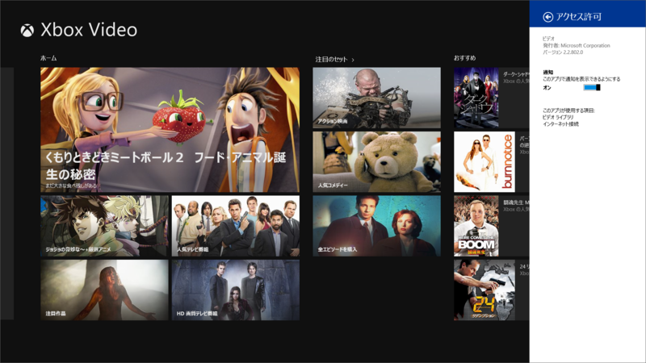

Bing アプリ 3.0.2.243、ビデオ 2.2.802.0
公開日：

ビルトインアプリの一斉アップデート。

ビデオ 2.2.802.0

アップデート内容:
- ダウンロード時の画質: HD で購入した映画やテレビ番組をダウンロードするときに、HD または SD のいずれかを選択できます
- 注目のセット: 映画やテレビ番組の名作が並んだイチオシのリスト
- その他の修正
Xbox の映画ストアが利用可能な国や地域のみ。 お住まいの国や地域で利用できる機能は、Xbox Video の機能リストをご確認ください。 http://support.xbox.com/apps/windows-8/xbox-on-windows-features